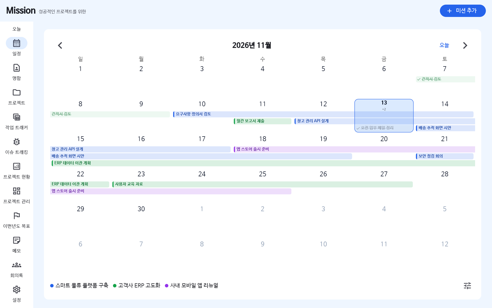
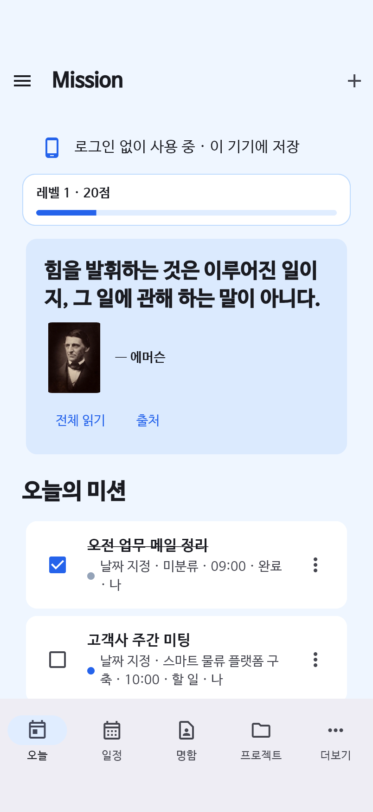
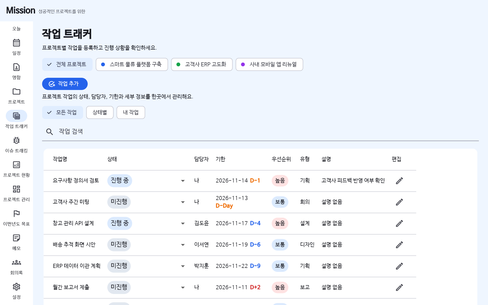
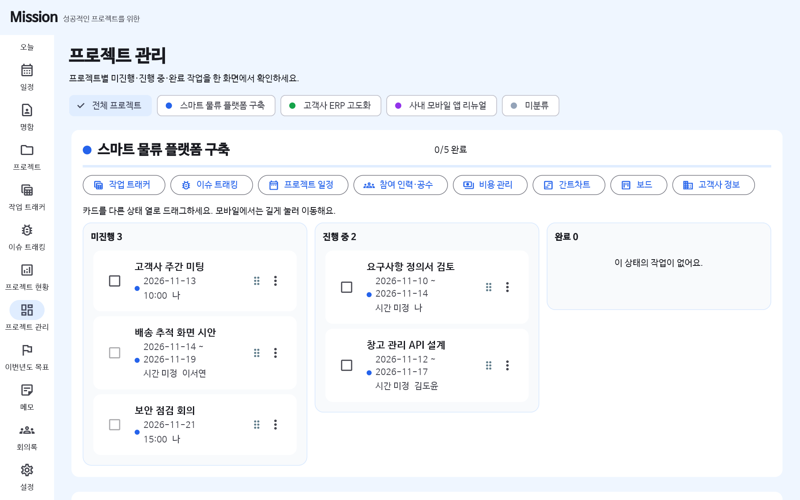
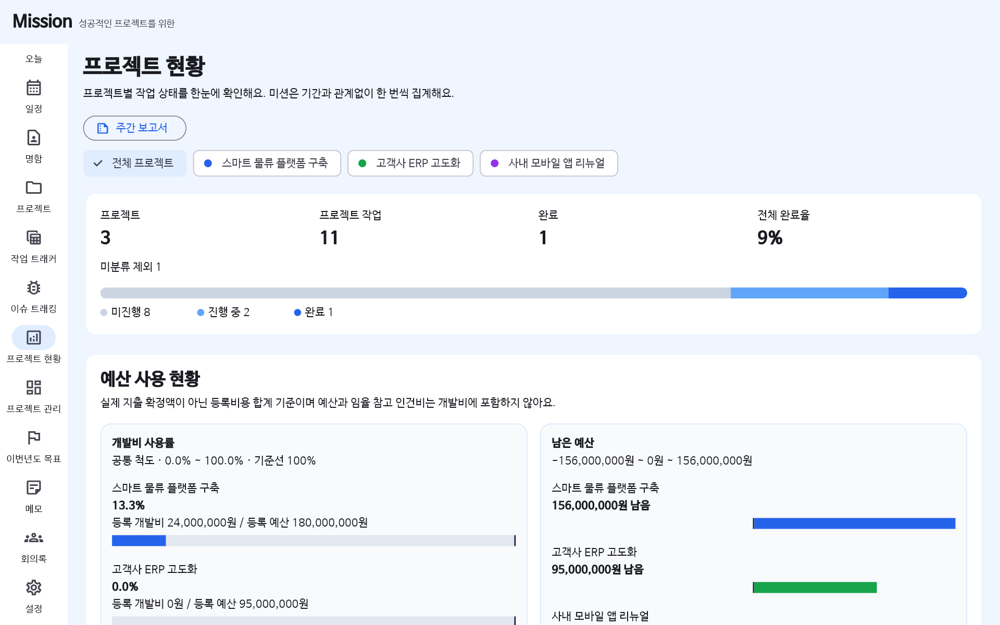
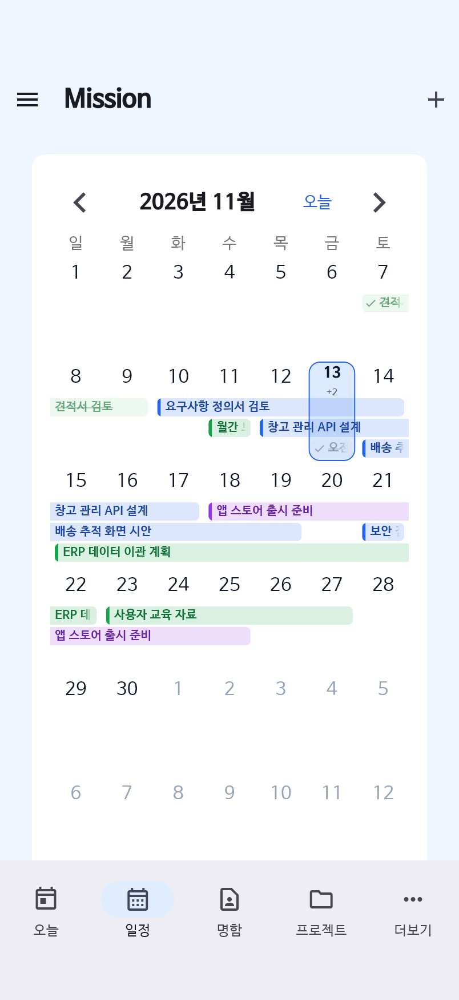

회의록
회의 내용을 기록·녹음하고 회사 Word(.docx)·한글(.hwpx) 양식에 채워 바로 보내요.
성공적인 프로젝트를 위한
Mission은 PM과 프로젝트를 진행하는 직장인을 위한 업무 앱이에요. 오늘 할 일부터 프로젝트 전체 흐름까지 휴대폰과 PC에서 같은 내용으로 봐요.


작업 트래커
작업마다 담당자, 기한, 우선순위, 유형을 정리하고 기한 옆 D-day로 마감을 챙겨요. 지난 기한은 빨강, 3일 이내는 주황으로 표시돼요. 상태별 보기와 '내 작업' 보기도 있어요.

프로젝트 관리
프로젝트별 작업을 카드 보드로 보고 끌어서 상태를 바꿔요. 이슈 트래킹, 프로젝트 일정, 참여 인력·공수, 비용 관리, 간트차트, 고객사 정보도 한 화면에서 열어요.

프로젝트 현황
전체 프로젝트의 작업 완료율과 프로젝트별 예산 사용 현황을 모아 보고, 주간 보고서로 정리해요.

휴대폰에서도
휴대폰과 PC에서 같은 프로젝트를 이어서 봐요. 홈 화면 위젯으로 앱을 열지 않고도 오늘의 미션과 이번 달 달력을 확인할 수 있어요.

회의 내용을 기록·녹음하고 회사 Word(.docx)·한글(.hwpx) 양식에 채워 바로 보내요.
명함을 찍으면 글자를 읽어 연락처를 채우고, 문자나 Outlook 연락처로 보내요.
Windows와 Mac 바탕화면에 오늘의 미션, 달력, 메모를 띄워 두고 크기와 불투명도를 조절해요.
Google Play에서 설치하고 업데이트를 자동으로 받아요.
Google Play에서 받기설치 파일을 실행하면 C:\Program Files\Mission에 설치돼요.
제어판의 프로그램 추가/제거에서 지울 수 있어요.
아직 코드 서명 인증서가 없어 처음 실행할 때 경고가 나올 수 있어요. 추가 정보 → 실행을 누르면 설치가 이어져요.
SHA-256: a993ed8368719a7debfe9ee445dda35afc657c2e7620792f0540302c7cf83540
디스크 이미지를 열고 Mission을 응용 프로그램 폴더로 끌어 놓으면 설치돼요.
지울 때는 응용 프로그램 폴더에서 휴지통으로 옮겨요. 버전 0.57.0.
아직 Apple 공증을 받지 않아 처음 열 때 이 경고가 나와요. 앱에는 문제가 없으니 휴지통으로 이동은 누르지 말고 완료를 눌러 주세요. 그다음 아래 두 방법 중 하나로 열 수 있어요. 한 번만 하면 돼요.
방법 1. 시스템 설정에서 허용
시스템 설정 → 개인정보 보호 및 보안을 열고 아래로 내려
"'Mission'이(가) 차단되었습니다" 옆의 그래도 열기를 누른 뒤
암호나 Touch ID로 확인해요. 그리고 Mission을 다시 열어요.
방법 2. 터미널 명령
Mission을 응용 프로그램 폴더로 옮긴 뒤 터미널(응용 프로그램 → 유틸리티)에
아래 명령을 붙여 넣고 Return을 눌러요. 그다음 Mission을 열어요.
xattr -dr com.apple.quarantine /Applications/Mission.app
SHA-256: eac66bcb23d7a99c5c756cc2303f5337e52adf5ad4a0f9c7beb34e726133b9af
Google, 네이버, Apple 계정으로 로그인하면 휴대폰과 PC에서 같은 내용을 볼 수 있어요. 로그인하지 않아도 기기 안에 저장해서 쓸 수 있어요.
새 버전에서 문제가 있으면 이전 버전을 설치할 수 있어요. 더 새 버전이 설치돼 있으면 먼저 제어판에서 Mission을 지운 뒤 설치해 주세요. 기록은 지워지지 않아요. Android 이전 버전은 Google Play 정책상 따로 제공하지 않아요.
| 버전 | 형식 | 크기 | 날짜 | |
|---|---|---|---|---|
| 0.57.0 | 설치 파일 (MSI) | 17MB | 2026-11-25 | 받기 |
| 0.56.0 | 설치 파일 (MSI) | 16MB | 2026-11-20 | 받기 |
| 0.55.6 | 설치 파일 (MSI) | 16MB | 2026-11-20 | 받기 |
| 0.55.5 | 설치 파일 (MSI) | 16MB | 2026-11-18 | 받기 |
| 0.55.4 | 설치 파일 (MSI) | 16MB | 2026-11-17 | 받기 |
| 0.55.2 | 설치 파일 (MSI) | 16MB | 2026-11-17 | 받기 |
| 0.55.1 | 설치 파일 (MSI) | 16MB | 2026-11-17 | 받기 |
| 0.55.0 | 설치 파일 (MSI) | 16MB | 2026-11-17 | 받기 |
| 0.54.0 | 설치 파일 (MSI) | 16MB | 2026-11-16 | 받기 |
| 0.53.7 | 설치 파일 (MSI) | 16MB | 2026-11-16 | 받기 |
| 0.53.6 | 설치 파일 (MSI) | 18MB | 2026-11-16 | 받기 |
| 0.53.5 | 설치 파일 (MSI) | 18MB | 2026-11-16 | 받기 |
| 0.53.4 | 설치 파일 (MSI) | 18MB | 2026-11-16 | 받기 |
| 0.53.3 | 설치 파일 (MSI) | 18MB | 2026-11-13 | 받기 |
| 0.53.2 | 설치 파일 (MSI) | 18MB | 2026-11-13 | 받기 |
| 0.53.1 | 설치 파일 (MSI) | 18MB | 2026-11-13 | 받기 |
| 0.53.0 | 설치 파일 (MSI) | 18MB | 2026-11-13 | 받기 |
| 0.51.3 | ZIP압축을 풀고 mission.exe 실행 | 22MB | 2026-11-05 | 받기 |